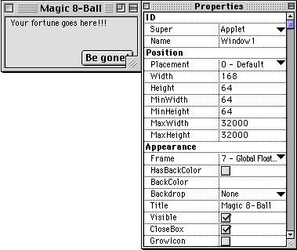
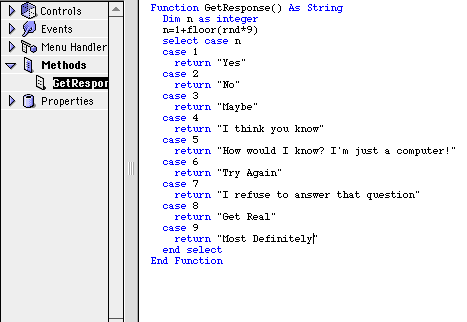
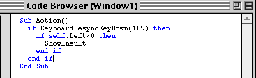
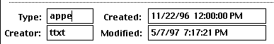
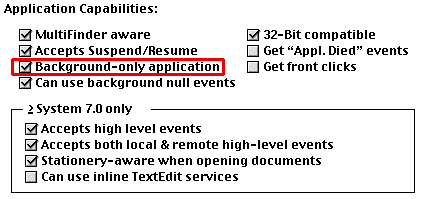
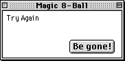

Extensions,
Cover Story
If you've used a mac for any amount of time, you probably know what an extension is. They go in the extensions folder, and modify some part of your system. Some might add a screensaver. Other might anti-alias all of the text you type.
Though you can't make this type of extension in Realbasic (at least not yet), you can make another type of extension. It doesn't modify anything, but it has a constant presence.
What we'll make
If you hadn't guessed by now, this cover story shows you how to make an extension in RB. Our extension will be a Magic 8-Ball. It will consist of a window that has one static text object on it. It will remain out of view, but when a key (F10) is pressed, it will appear, and tell us our fortunes. When you click on a button called "Be Gone!", it will disappear.
Getting Started
To get started, we'll need to make a window. Here's what it should look like:

Note that the window's type is global floater.
The Magic 8-Ball
Naturally, a main part of the magic 8-ball program is creating a random response. Let's use these:
To do that, we'll need to make a method. It should be called "GetResponse", and should have no parameters. It will return a string.
So, with no further ado, here's the code:

The second line sets the value of n to a random number between 1 and 9. The rest of the lines return a value based on this number.
So, the statement MsgBox GetResponse could display a message on the screen with any of the nine possible replies.
Limitations of extensions
Even though you can do a lot with them, extensions made in Realbasic are very limited. Here are the specs of what you can and cannot have:
• They cannot have a menu
• They can only use global floaters
• They can't put a dialog on the screen
With these limitations in mind, there actually ARE a lot of things you can do with an extension (like our 8-ball, which conforms to all of these).
Hiding and showing the 8-ball
Since people won't want to have the 8-ball window open all the time, we'll want to add the ability to hide it. Actually, we won't REALLY be hiding it–we'll only move it off the left edge of the screen. To hide it, we'll move its left edge to -1000, and to show it, we'll move the left edge to 200.
Here are the routines to show and hide the windows:
Sub HideWindow()
me.Left=-1000
End Sub
Sub ShowWindow()
StaticText1.Text=GetResponse
me.Left=100
End Sub
The first routine is fairly self-explanatory. The second one does two things however: it sets the label to a random phrase, and shows the window.
Checking for the key to be down
We still need a way to show and hide the window! In the beginning of this tutorial, we said that they F10 key would show and hide the window. Your first reaction would probably be to use the window's KeyDown event. After all, we are trapping a keypress. However, since this event only fires when the window is in the foreground, and extensions are never in the foreground, this won't work.
Is there another way? This would be a pretty dumb tutorial if there wasn't! Believe it or not, the best way to do this is to use a timer. The timer periodically checks to see whether or not F10 is currently pressed. If it is, and the window is off the screen, the timer shows the window with a new prediction. Here's how the code:

This code certainly warrants an explanation, so you'll get one.
• If Keyboard.AsyncKeyDown(109) then
This line checks to see wether the F10 key is depressed. The Keyboard object's AsyncKeyDown method uses the same numbering system as the SpriteSurface. In this system, the F10 key's ID is 109. So, if the F10 key is down, we keep on going to...
• If self.Left<0 then
This line checks to see if the window is visible. Before you start getting confused, look back a bit. We decided that in order to hide the window, we'd move its left side to -1000 (which is off the screen). If the window is hidden, its Left is less than 0. So, if the window is not visible, we go on to...
• ShowInsult
From here on out, the code is stuff we've already seen. This command shows the window, and generates an insult. The rest of the codes are just de-nesters. (Yes, that is a word).
Also, if you run the program, and notice that the window isn't NEARLY as responsive in the background, you should know that this isn't your fault. In general, when it's in the background, a timer fires only about a third as often as it usually would. If the unresponsiveness annoys you, by all means, e-mail REAL Software. This problem also affects threads.
Extension vs. Application
In a sense, you're done! However, this is only true if you want your 8-ball to be a normal application, which we don't. We're greedy: we want an extension. So, we still have a few short steps left that make a project a system extension.
Step #1: Compile. This makes the project a double-clickable application program.
Step #2: Open in Resourcer. ResEdit also works.
Step #3: Change the type. Change the program's type code from "APPL" to "appe". This converts it to a system extension, like so:

Step #4: Make it a background task. Double-Click the newly dubbed system extension's SIZE resource, and check the "Background Task" box, like so:

Step #5: Last but not least... Save the extension, drag it into the extensions folder, and restart.
In Conclusion...
 We now have a system extension that looks somewhat like the window to the right. Sure, it won't sell as many copies as Kaleidoscope, but you've made it! You're now a utility developer!
Also, as an added bonus, the extension will be compatible with Mac
OS X, since this is what all extensions will be like in it!
In the future, the abilities of RB-made applications will only expand. If timers fire correctly in the background, and more functions that control aspects of the system are added, then these extensions could become significantly more powerful. In fact, if only a few more commands were added, you could write a macro utility! (not that it'd be that great...)
As usual, there are many other things you could do to this 8-Ball. Here are a few that you might want to try if you've been truly swept off your feet by it: